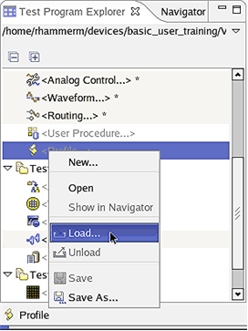

Loading a data logging profile
About this task
This task describes how to load an existing data logging profile. For a description of how to create or change data logging profiles, see Profile Editor.
When you load a data logging profile, its settings immediately become activated.
You can load a data logging profile either from the Test Program Explorer, which is part of the Setup perspective or from the operation control window.
Before you begin
The SmarTest software must be running.
Procedures
Loading a data logging profile using the Test Program Explorer
- In the Test Program Explorer, right-click <Profile> and choose
Load.

- Select the profile you want to load and click OK. The loaded data logging profile is displayed in the Test Program Explorer tree.
Loading a data logging profile using the operation control
- In the Operation Control window, click the Profile list box. A list
containing all available data logging profiles is displayed.

- Click the profile you want to load. The list box closes and the loaded profile is displayed in the Profile field.
Results
You have loaded a data logging profile to the test system. It determines which data gets logged.
Functional changes
- Introduced before SmarTest 6.3.2